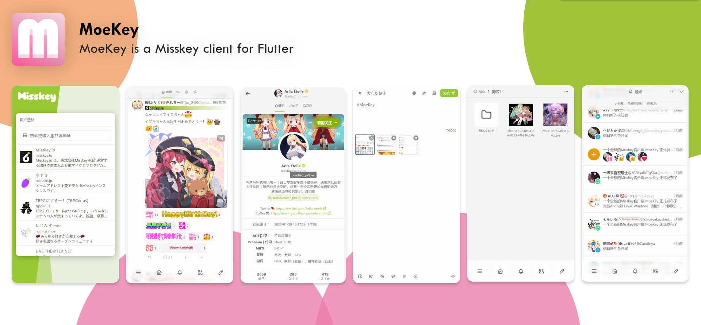

这就是 MoeKey
时间线、个人主页、帖子与通知，一起来看看。

目前能做什么
从浏览、发布到互动，一站完成。
- 四种实时动态
- 首页、本地、社交与全局时间线，支持分页加载和实时更新。
- 发布与互动
- 附件、回复、引用、投票、内容警告与可见范围；支持转发、表情回应和自己的帖子管理。
- 个人资料与账号
- 编辑头像、横幅、简介和自定义资料，登录并切换多个账号。
- 关注与通知
- 查看用户与关注列表，处理关注请求，浏览分组通知、提及和成就获得通知。
- 网盘与便签
- 上传、整理和管理文件；创建、编辑与收藏便签，收集感兴趣的帖子。
- 搜索与发现
- 搜索帖子与用户，浏览热门内容、话题标签和系统公告。
下载
安装包发布在 GitHub。
选择你的平台
下载 MoeKey，在你的设备上开始使用。